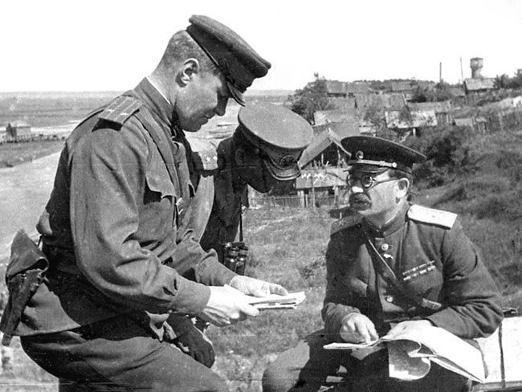
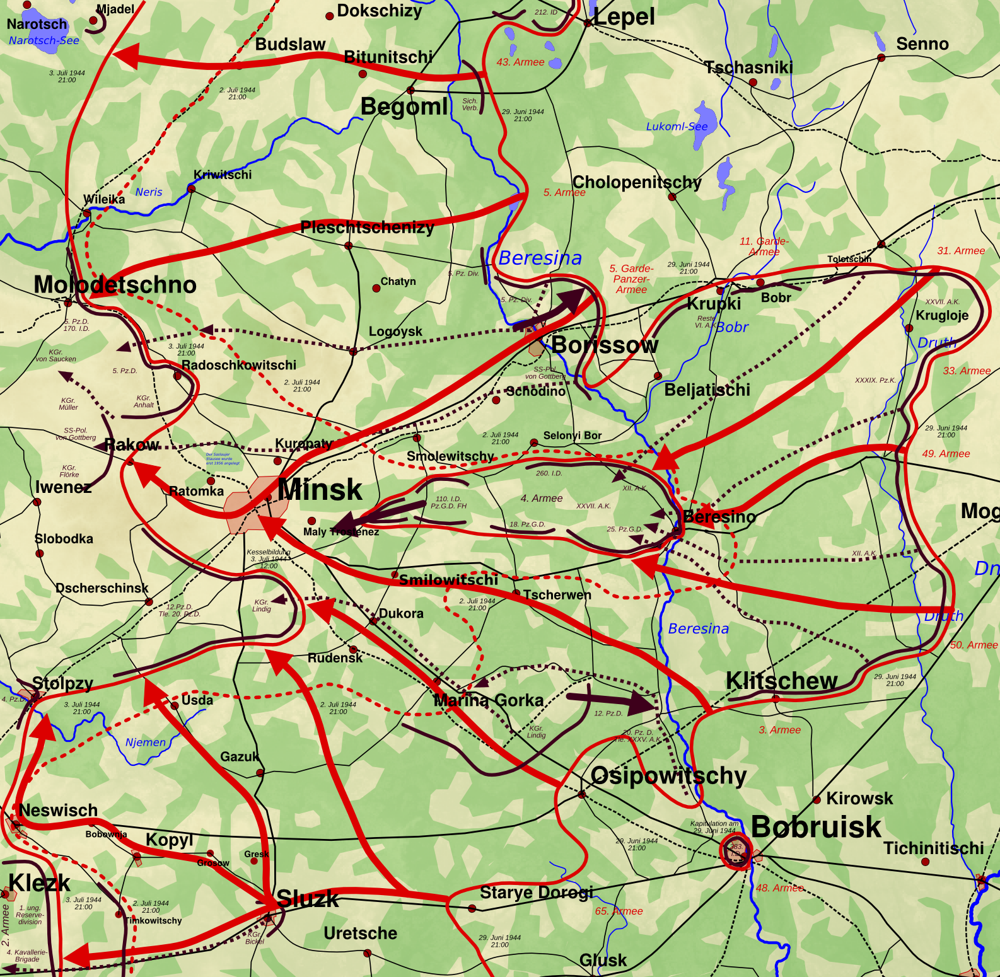
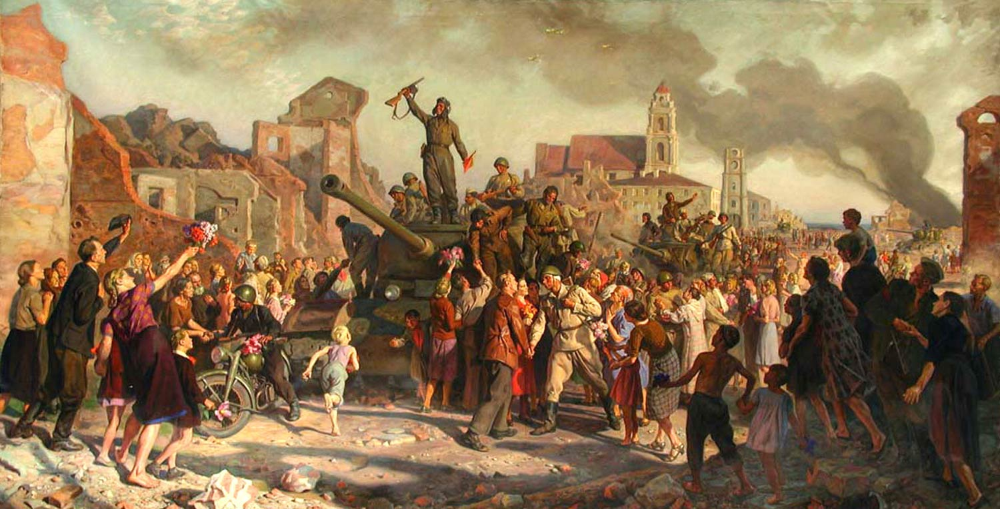

Второй мировой конфликт был наполнен масштабными сражениями, которые определяли исход войны. Одним из важнейших событий стал этап освобождения Беларуси от немецкой оккупации. В рамках этой кампании особое значение имела Битва за Минск, которая происходила с 29 июня по 4 июля 1944 года и стала важнейшей частью операции под кодовым названием "Багратион"(23 июня - 29 августа) - крупнейшего наступления Советской армии на Восточном фронте.
Минск - крупнейший город Беларуси, центр административной, промышленной и транспортной инфраструктуры. В ходе немецкой оккупации он стал важной транспортной и коммуникационной точкой, а контроль над ним имел стратегическое значение для обеих сторон конфликта. Немецкие войска, закрепившие оборону в районе Минска, надеялись задержать продвижение советских войск и использовать город как опорную базу для продолжения сопротивления. Однако советским командованием было ясно: удержание Минска мешает продвижению фронта и угрожает всему стратегическому плану освобождения Беларуси и дальнейших наступлений на запад. Поэтому было принято решительное наступление с целью освобождения города.


С 2 июля 1944 года под командованием Маршала Советского Союза Константина Рокоссовского войска 1-го Белорусского фронта и элементы 3-го Белорусского фронта начали наступление на Минск с северо-запада и с севера. Общее число советских войск, участвовавших в операции, превышало несколько сотен тысяч человек - артиллерия, танки, самолёты и пехота тесно взаимодействовали в боях. Перед наступлением была проведена мощная артиллерийская подготовка - около двух часов артиллерия массированным огнём разрушала немецкие фортификации и позиции.
Немцы оказали жестокое сопротивление. В городе завязались уличные бои с применением автоматического оружия, гранат, миномётов и танков. Советские подразделения штурмовали укреплённые кварталы, освобождая один район за другим. Ключевым было овладение важными транспортными перекрёстками, железнодорожным вокзалом и мостами через реку Свислочь, которые немцы пытались взорвать, чтобы замедлить продвижение Красной Армии. Активное участие в боях приняли части стрелковых дивизий, танковые корпуса и инженерно-сапёрные подразделения, которые быстро восстанавливали разрушенные коммуникации и обеспечивали продвижение наступающих.
Немецкое командование инициировало несколько контратак силами танковых и пехотных подразделений, пытаясь выбить советские войска из северных и западных районов Минска. Однако мощное огневое превосходство советской артиллерии и авиации не позволило немцам удержать позиции. В течение двух дней силами Красной Армии было уничтожено или захвачено множество немецких солдат и техники.


К утру 3 июля 1944 года Минск был полностью освобождён. Оставшиеся немецкие подразделения отошли, понеся тяжёлые потери и лишившись стратегического узла коммуникаций. Победа в Минске стала одним из решающих ударов по группе армий «Центр», открыло путь для дальнейшего наступления советских войск на запад и ускорило освобождение Беларуси и соседних территорий. Город стал символом мощи Красной Армии и упорства советского народа в борьбе с нацистскими захватчиками.

9 декабря 1896 - 3 августа 1968

23 апреля 1897 - 26 января 1957